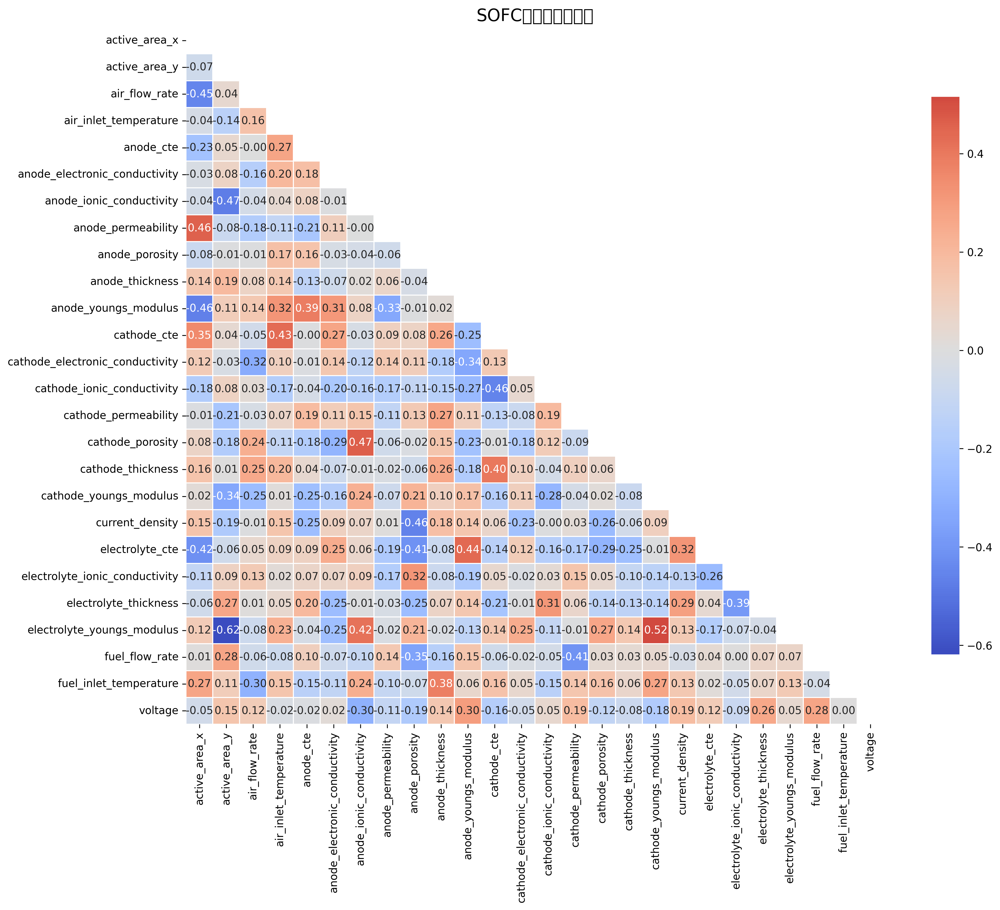
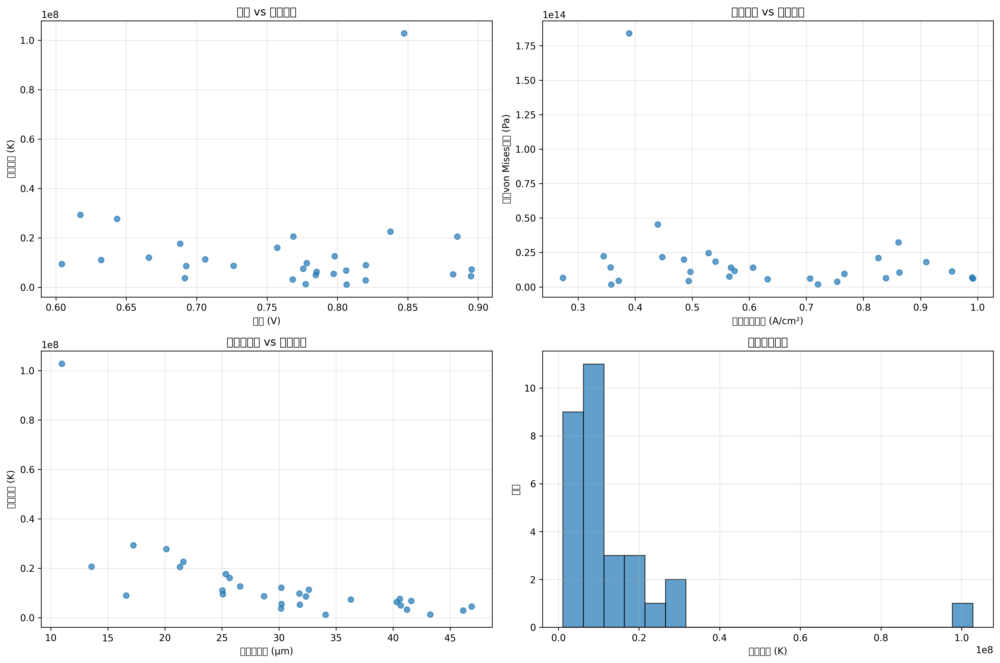

生成时间: 2025-10-30 01:07:25
数据集文件: sofc_high_fidelity_dataset.h5
仿真数量: 30
创建日期: 2025-10-30T01:05:58.566280
本数据集包含SOFC（固体氧化物燃料电池）的高保真数值仿真数据，涵盖多物理场耦合分析：
数据集包含 26 个输入参数，涵盖操作条件、材料属性和几何参数。

参数相关性分析

SOFC性能指标分析
本数据集可用于：